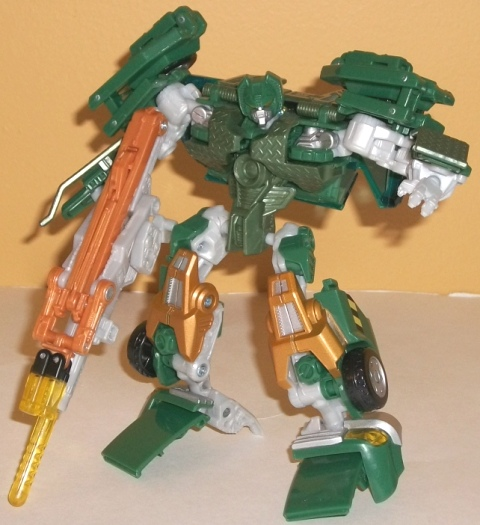

Back
Road Brawl Vs. Set (Toys "R" Us Exclusive)
Back
Road Brawl Vs. Set (Toys "R" Us Exclusive)
Set Price
: $35 U.S.
Hoist

Allegiance
: Autobot
Size
: Deluxe
Difficulty of Transformation
: Medium
Color Scheme
: Dark forest green,
light milky gray, light milky orange, and some transparent blue, transparent
yellow, black, silver, yellow, moderately light speckled forest green,
and metallic orangish copper
Rating
: 9.4
(NOTE: Because this is a repaint, this is
not a full-blown review. This mainly covers any changes made to the mold
and the color scheme, and merely compares it to the Movie Longarm toy.
For a review on the mold itself, read the review of the Movie Longarm toy
here
.)
Hoist here has a deco
job based on his
G1 namesake
, which certainly
fits the general alt mode of a tow truck as well. Nearly down to tee, the
colors are the same-- the same moderately dark shade of green, the same
silver, tne same shade of orange. There's more colors thrown into the mix
to help keep things interesting, though, like a very nice-looking speckly
light green on part of the back end of the vehicle, and some particularly
attractive metallic copper knees in robot mode. The transparent yellow
sirens/lights and transparent blue windows are also equally good shades.
The one plastic color I do NOT like is the gray-- it's a very, very chalky,
light gray that just looks very unattractive and dull, even moreso than
the more common of the milky light gray shades on most other TF toys. As
far as paint apps, they're more concentrated in robot mode this time around,
so a few parts, such as part of the sides and the front of the vehicle
mode, do look rather plain compared to TF1 Longarm. I do like the yellow/black
"caution" stripe used on the side doors, though, as another G1 throwback.
It should've gone across the entire side as opposed to just the door and
a small portion in front of it, however-- having it stop abruptly halfway
down the figure for no reason looks a little odd. The robot mode head,
even though it's the same mold as on Longarm, still managed to bear a close
resemblance to G1 Hoist's, which is likely not by accident-- this repaint
was probably planned eventually from the moment Longarm's head sculpt was
finallized.
No mold changes have
been made to RotF Hoist.
Hoist Tech Specs
:
Strength: 8.0
Intelligence: 6.0
Speed: 3.0
Endurance: 8.0
Rank: 6.0
Courage: 8.0
Fireblast: 6.0
Skill: 9.0
Mixmaster
Allegiance
: Decepticon
Size:
Voyager
Difficulty of Transformation
: Very
Hard
Color Scheme
: Light lime green,
black, pale purplish gray, and some silver, transparent light orange, yellow,
light metallic bronze, and dark purple
Rating:
7.7
(NOTE: Because this is a repaint, this is
not a full-blown review. This mainly covers any changes made to the mold
and the color scheme, and merely compares it to the original voyager RotF
Mixmaster toy. For a review on the mold itself, read the review of the
original voyager RotF Mixmaster toy
here
.)
As you'd expect from
a Constructicon repaint, Mixmaster here is now in roughly G1 colors. The
lime green is certainly as prevalent here as on his G1 namesake, but the
dark purple is less obvious, being only really visible in robot mode, and
even then only on a few fairly small places. There is a nice shade of purplish
gray used for the cement drum, though, which goes quite well with the light
green and black. I also love the trnasparent orange-- it really stands
out against the other colors and emphasizes the not-quite-realistic paint
job the toy has. He's also got quite a lot of great paint apps, such as
the same yellow/black stripe on the rear side of the vehicle, helping him
fit in as a "set" with Hoist. He's also got some nice red stripes around
his cement truck, and all his grills and "metal" parts are painted the
appropriate silver. Plus, in a rather hilarious homage to (again) his G1
namesake, he's got two "Ol' Lefty" markings above his front tires-- referring
to the fact that in G1, he was the left leg of Devastator! All in all,
it's a very good color scheme-- a definite homage to the G1 toy, but adding
a bit more to the mix, which is almost always how I like my homage repaints.
Surprisingly for a store
exclusive, Mixmaster does have a mold change-- namely, a head remold. It's
based off of an early head design for the character, when he was apparently
meant to be an Autobot. Unfortunately, it's a bit goofy and uneven looking,
and hardly suiting for a Decepticon. It's hard to take him seriously with
a really weird look on his face like the one he's got sculpted on.
Mixmaster Tech Specs:
Strength: 6.0
Intelligence: 9.0
Speed: 3.0
Endurance: 7.0
Rank: 8.0
Courage: 3.0
Fireblast: 6.0
Skill: 9.0
The "Back Road Brawl"
set is one of the better store exclusive sets from the RotF line, even
considering the slightly inflated price of $35 U.S. Both are great repaints,
with all of the colors mixing together nicely and each having a nice and
varied number of paint apps. Plus, G1 homages to boot, but without being
slavishly so. Hoist's ugly light milky gray and Mixmaster's odd-looking
new head are the only real downsides of these toys, at least compared to
the originals. Recommended.
Back Road Brawl Bio
:
When Mixmaster develops a new weapon
or poison, he needs a robot to test it on. That's why he tracked down Hoist.
The tough Autobot is rugged enough to prove the effectiveness of any toxin,
and valuable enough to the Autobots that taking him out could do some serious
damage. What the Decepticon scientist didn't count on is that Hoist has
been trained by the best warriors in the galaxy. The Autobot might be a
nice guy, but that doesn't mean he's a pushover. What Mixmaster thought
would be a simple test just turned into the fight of his life.
Reviews by Beastbot
Back to Transformers:
Revenge of the Fallen Index